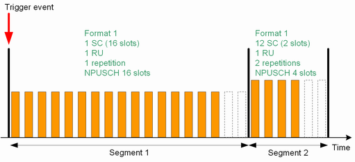
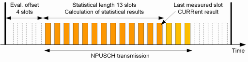
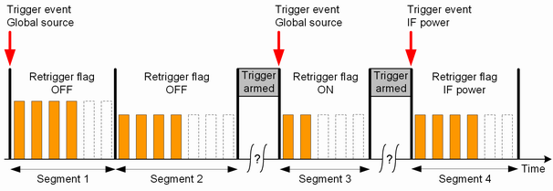

Each segment contains an integer number of slots and is measured at constant analyzer settings. In each segment, a single NPUSCH transmission is measured.
The NPUSCH transmission must start with the first slot of the segment. At the end of a segment, you can have additional slots without NPUSCH transmission.
The figure below shows two segments with different lengths and signal properties. The NPUSCH configuration is listed in the figure. Orange rectangles depict slots of an NPUSCH transmission.
The dashed slots are part of the configured segment length. But there is no NPUSCH transmission in these slots.

You can configure up to 2000 segments in total as preparation for list mode measurements. One list mode measurement can cover up to 1000 segments with in total up to 4000 measured slots. For details, see "Maximum number of measured slots". That means, for each measurement you select a range of up to 1000 segments to be measured from the total range of up to 2000 configured segments.
In list mode, the R&S CMW can measure modulation results (including inband emission results), ACLR and spectrum emission results. The measured quantities can be enabled or disabled individually for each segment.
A segment without any enabled measurements is called inactive segment. Inactive segments are useful for time-consuming UE reconfiguration. For that purpose, you define alternating active and inactive segments. In the active segments, you measure the signal. In the inactive segments, you reconfigure the UE for the next measured segment.
The measurement expects the start of the NPUSCH transmission at the start of the segment. If the NPUSCH transmission starts later, you can configure an evaluation offset so that the measurement starts later. The evaluation offset specifies how many slots at the beginning of the segment are ignored.
The statistical length defines the number of slots to be measured per segment. You can measure an entire NPUSCH transmission or only a part of it. The "current" result of a segment refers to the last measured slot of the statistical length. Additional statistical values (average, minimum, maximum and standard deviation) are calculated for the entire statistical length. The following figure provides a summary.

Two consecutive segments are often measured at different analyzer settings. The R&S CMW changes the analyzer settings in the last two slots of a segment. These last two slots of each segment are automatically excluded from the measurement.
Results of other slots that cannot be measured accurately (because of overflow, low signal or synchronization error) can also be discarded automatically (parameter "Measure on Exception" = Off). The reached statistical length, a reliability indicator for the measurement and a reliability indicator for the segment are included in most measurement results.
The limit of 4000 measured slots comprises measured slots included in a statistical length. The not measured slots of an active segment do not contribute. Other contributions that "cost" slots are inactive segments and triggering of a segment.
- One slot per inactive segment
- Two times the number of triggered segments
- Per active segment: Slots in the statistic count of the segment plus three slots
A list mode measurement can either be triggered only once, or it can be retriggered at the beginning of specified segments.
In "Once" mode, a trigger event is only required to start the measurement. As a result, the entire range of segments (up to 1000) is measured without additional trigger event. The trigger is rearmed after the measurement has been finished. The retrigger flag of the first segment specifies which trigger source is used (IF power trigger or trigger source configured via global trigger settings). The retrigger flags of subsequent segments are ignored.
The "Once" mode is recommended for UL signals with accurate timing over the entire range of segments.
In "Segment" mode, the retrigger flag of each segment is evaluated. It defines whether the measurement waits for a trigger event before measuring the segment, or not and which trigger source is used. For the first segment, the value OFF is interpreted as ON.
Retriggering the measurement is recommended, if the timing of the first slot of a segment is inaccurate, for example because of signal reconfiguration at the UE. Furthermore, retriggering from time to time can compensate for a possible time drift of the UE.
In the following example, the "Segment" mode is enabled. The measurement stops when the second segment has been captured and waits for a trigger event from the globally configured trigger source, before capturing the third segment. After the third segment, it waits for a trigger event from the IF power trigger source, before capturing the fourth segment.

Segment configuration and measurement are independent from each other. To perform a sequence of measurements at maximum speed, proceed as follows:
Configure all segments ever needed.
The R&S CMW supports a range of up to 2000 configured segments.
Select up to 1000 consecutive segments within the configured segment range (consider the maximum number of measured slots).
Measure the selected segments.
Repeat steps 2 and 3 as often as needed.
The list mode is essentially a single-shot remote control application. When a measurement is initiated in list mode, all defined segments are measured once. Afterwards, the results can be retrieved using FETCh commands.
The following remote control commands are used for list mode settings and result retrieval.
Parameters | SCPI commands |
|---|---|
Activate / deactivate list mode | |
Range of measured segments | |
Segment configuration (frequency, NPUSCH format, number of slots, ...) | |
Statistical length and result activation | |
Trigger mode | |
R&S CMWS connector | |
Retrieve results | FETCh:NIOT:MEAS<i>:MEValuation:LIST:SEGMent<no>:... See "List Mode Results". The segment number <no> for configure commands is an absolute number (1 to 2000). The segment number <no> for result retrieval is a relative number within the range of measured segments (1 to 1000). Example: Segment 1 to 100 configured. Segment 50 to 59 measured. For result retrieval <no> = 1 refers to segment 50, <no> = 10 to segment 59. |
You can deactivate the list mode via a command and also via the GUI:
Go to local using the corresponding hotkey.
The active list mode is indicated in the upper right corner of the current view by the words "List Mode!".
Open the configuration dialog box.
In section "Measurement Control", select another measurement mode.
Global and list mode parameters Some settings are available as special list mode settings and as multi-evaluation settings (e.g. NPUSCH format, frequency and modulation scheme). In list mode, the R&S CMW ignores these multi-evaluation parameters. All other settings not available as special list mode settings are taken from the multi-evaluation measurement, e.g.:
|